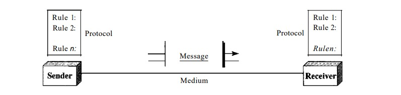

1. Introduction
Data communications and networking are changing the way we do business and the way we live. Business decisions have to be made ever more quickly, and the decision makers require immediate access to accurate information. Why wait a week for that report from Germany to arrive by mail when it could appear almost instantaneously through computer networks? Businesses today rely on computer networks and internetworks. But before we ask how quickly we can get hooked up, we need to know how networks operate, what types of technologies are available, and which design best fills which set of needs. The development of the personal computer brought about tremendous changes for business, industry, science, and education. A similar revolution is occurring in data communications and networking. Technological advances are making it possible for communications links to carry more and faster signals. As a result, services are evolving to allow use of this expanded capacity. For example, established telephone services such as conference calling, call waiting, voice mail, and caller ID have been extended. Research in data communications and networking has resulted in new technologies. One goal is to be able to exchange data such as text, audio, and video from all points in the world. We want to access the Internet to download and upload information quickly and accurately and at any time. This chapter addresses four issues: data communications, networks, the Internet, and protocols and standards. First we give a broad definition of data communications. Then we define networks as a highway on which data can travel. The Internet is discussed as a good example of an internetwork (i.e., a network of networks). Finally, we discuss different types of protocols, the difference between protocols and standards, and the organizations that set those standards
Data Communication
When we communicate, we are sharing information. This sharing can be local or remote. Between individuals, local communication usually occurs face to face, while remote communication takes place over distance. The term telecommunication, which includes telephony, telegraphy, and television, means communication at a distance (tele is Greek for "far").
The word data refers to information presented in whatever form is agreed upon by the parties creating and using the data.
Data communications are the exchange of data between two devices via some form of transmission medium such as a wire cable. For data communications to occur, the communicating devices must be part of a communication system made up of a combination of hardware (physical equipment) and software (programs). The effectiveness of a data communications system depends on four fundamental characteristics: delivery, accuracy, timeliness, and jitter.
- Delivery. The system must deliver data to the correct destination. Data must be received by the intended device or user and only by that device or user.
- Accuracy. The system must deliver the data accurately. Data that have been altered in transmission and left uncorrected are unusable.
- Timeliness. The system must deliver data in a timely manner. Data delivered late are useless. In the case of video and audio, timely delivery means delivering data as they are produced, in the same order that they are produced, and without significant delay. This kind of delivery is called real-time transmission.
- Jitter. Jitter refers to the variation in the packet arrival time. It is the uneven delay in the delivery of audio or video packets. For example, let us assume that video packets are sent every 3D ms. Ifsome of the packets arrive with 3D-ms delay and others with 4D-ms delay, an uneven quality in the video is the result
Components
A data communications system has five components (see Figure 1.1)

- Message. The message is the information (data) to be communicated. Popular forms of information include text, numbers, pictures, audio, and video.
- Sender. The sender is the device that sends the data message. It can be a computer, workstation, telephone handset, video camera, and so on.
- Receiver. The receiver is the device that receives the message. It can be a computer, workstation, telephone handset, television, and so on.
- Transmission medium. The transmission medium is the physical path by which a message travels from sender to receiver. Some examples of transmission media include twisted-pair wire, coaxial cable, fiber-optic cable, and radio waves.
- Protocol. A Protocol is a set of rules that govern data communications. It represents an agreement between the communicating devices. Without a protocol, two devices may be connected but not communicating, just as a person speaking French cannot be understood by a person who speaks only Japanese.
Data Representation
Information today comes in different forms such as text, numbers, images, audio, and video.
Text
In data communications, text is represented as a bit pattern, a sequence of bits (Os or Is). Different sets of bit patterns have been designed to represent text symbols. Each set is called a code, and the process of representing symbols is called coding. Today, the prevalent coding system is called Unicode, which uses 32 bits to represent a symbol or character used in any language in the world. The American Standard Code for Information Interchange (ASCII), developed some decades ago in the United States, now constitutes the first 127 characters in Unicode and is also referred to as Basic Latin. Appendix A includes part of the Unicode.
Numbers
Numbers are also represented by bit patterns. However, a code such as ASCII is not used to represent numbers; the number is directly converted to a binary number to simplify mathematical operations. Appendix B discusses several different numbering systems.
Images
Images are also represented by bit patterns. In its simplest form, an image is composed of a matrix of Pixels (picture elements), where each pixel is a small dot. The size of the pixel depends on the resolution. For example, an image can be divided into 1000 pixels or 10,000 pixels. In the second case, there is a better representation of the image (better resolution), but more memory is needed to store the image.
After an image is divided into pixels, each pixel is assigned a bit pattern. The size and the value of the pattern depend on the image. For an image made of only black and white dots (e.g., a chessboard), a I-bit pattern is enough to represent a pixel.
If an image is not made of pure white and pure black pixels, you can increase the size of the bit pattern to include gray scale. For example, to show four levels of gray scale, you can use 2-bit patterns. A black pixel can be represented by 00, a dark gray pixel by 01, a light gray pixel by 10, and a white pixel by 11.
There are several methods to represent color images. One method is called RGB, so called because each color is made of a combination of three primary colors: red, green, and blue. The intensity of each color is measured, and a bit pattern is assigned to it. Another method is called YCM, in which a color is made of a combination of three other primary colors: yellow, cyan, and magenta.
Audio
Audio refers to the recording or broadcasting of sound or music. Audio is by nature different from text, numbers, or images. It is continuous, not discrete. Even when we use a microphone to change voice or music to an electric signal, we create a continuous signal. In Chapters 4 and 5, we learn how to change sound or music to a digital or an analog signal.
Video
Video refers to the recording or broadcasting of a picture or movie. Video can either be produced as a continuous entity (e.g., by a TV camera), or it can be a combination of images, each a discrete entity, arranged to convey the idea of motion. Again we can change video to a digital or an analog signal
Data Flow
Communication between two devices can be simplex, half-duplex, or full-duplex as shown in Figure 1.2.

Simplex
In simplex mode, the communication is unidirectional, as on a one-way street. Only one of the two devices on a link can transmit; the other can only receive (see Figure 1.2a). Keyboards and traditional monitors are examples of simplex devices. The keyboard can only introduce input; the monitor can only accept output. The simplex mode can use the entire capacity of the channel to send data in one direction.
Half-Duplex
In half-duplex mode, each station can both transmit and receive, but not at the same time. : When one device is sending, the other can only receive, and vice versa (see Figure 1.2b). The half-duplex mode is like a one-lane road with traffic allowed in both directions. When cars are traveling in one direction, cars going the other way must wait. In a half-duplex transmission, the entire capacity of a channel is taken over by whichever of the two devices is transmitting at the time. Walkie-talkies and CB (citizens band) radios are both half-duplex systems. The half-duplex mode is used in cases where there is no need for communication in both directions at the same time; the entire capacity of the channel can be utilized for each direction.
Full-Duplex
In full-duplex mode (also called duplex), both stations can transmit and receive simultaneously (see Figure 1.2c). The full-duplex mode is like a two-way street with traffic flowing in both directions at the same time. In full-duplex mode, signals going in one direction share the capacity of the link: with signals going in the other direction. This sharing can occur in two ways: Either the link must contain two physically separate tranmsmissionn paths, one for sending and the other for receiving; or the capacity of the channel is divided between signals traveling in both directions. One common example of full-duplex communication is the telephone network. When two people are communicating by a telephone line, both can talk and listen at the same time. The full-duplex mode is used when communication in both directions is required all the time. The capacity of the channel, however, must be divided between the two directions